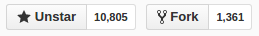
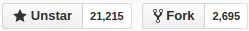

FrontEnd Framework Comparison
俞洋洋 前端开发
包管理
管理第三方资源
- duo
- bower
- npm
duo
Duo is a next-generation package manager that blends the best ideas from Component, Browserify and Go to make organizing and writing front-end code quick and painless.
$ npm install -g duoduo
app.js
var uid = require('matthewmueller/uid');
var fmt = require('yields/fmt');
var msg = fmt('Your unique ID is %s!', uid());
window.alert(msg);
@import 'necolas/normalize.css';
@import './layout/layout.css';
body {
color: teal;
background: url('./background-image.jpg');
}
$ duo app.js app.cssbower
Web sites are made of lots of things — frameworks, libraries, assets, and utilities. Bower manages all these things for you.
$ npm install -g bower
# installs the project dependencies listed in bower.json
$ bower install
# registered package
$ bower install jquery
# GitHub shorthand
$ bower install desandro/masonry
# Git endpoint
$ bower install git://github.com/user/package.git
# URL
$ bower install http://example.com/script.js
npm
npm is the package manager for JavaScript. Find, share, and reuse packages of code from hundreds of thousands of developers — and assemble them in powerful new ways.
# installs the project dependencies listed in package.json
$ npm install
# run scripts
$ npm run build
CSS预处理器
why
.animate{
transition: all 1s;
-webkit-transition: all 1s;
-moz-transition: all 1s;
-o-transition: all 1s;
-ms-translation: all 1s;
}
.animate{
.transition(all 1s);
}
比较
| 项目 | 基于 | github | mixins |
|---|---|---|---|
| less | node | lesshat | |
| sass | ruby | sass-css3-mixins | |
| stylus | node |  |
nib |
构建工具
- grunt
- gulp
比较
| 项目 | 基于 | 风格 | 核心 | github | 插件 |
|---|---|---|---|---|---|
| grunt | node | 配置 | 文件 |  | 5718 |
| gulp | node | 代码 | 流 |  | 2419 |
grunt
grunt.initConfig({
sass: {
dist: {
files: [{
cwd: 'app/styles',
src: '**/*.scss',
dest: '../.tmp/styles',
expand: true,
ext: '.css'
}]
}
}
});
grunt.registerTask('default', ['sass']);
gulp
gulp.task('sass', function () {
gulp.src('app/styles/**/*.scss')
.pipe(sass())
.pipe(autoprefixer('last 1 version'))
.pipe(gulp.dest('dist/styles'));
});
gulp.task('default', function() {
gulp.run('sass');
gulp.watch('app/styles/**/*.scss', function() {
gulp.run('sass');
});
});
模块管理
- requirejs
- systemjs
- browserify
- webpack
requirejs/systemjs/browserify
webpack
一切皆模块
框架或库
- Angular1
- Angular2
- React
- Vue
- Polymer
- Ember
- Meteor
angular1
-
特性
- MVC
- 过滤器
- 依赖注入
- 指令
-
缺点
- 伪模块
- 设计缺陷
- 性能瓶颈
angular2
-
特性
- MVC
- typescript
- 组件
- rxjs(Reactive Extensions for javascript)
- css encapsulation
-
缺点
- 多依赖(zone.js rxjs reflect-metadata)
- RC版本
- 路由模块重构当中
react
-
特性
- V
- jsx
- 组件
- virtual dom
- immutable data
- react native
-
缺点
- v + any
- 表单
vue
-
特性
- V
- 组件
- 轻量
- angular + react
-
缺点
- v + any
- 生态
polymer
-
特性
- web components
- polymer-cli
- http2
-
缺点
- 面向未来
ember
-
特性
- MVC
- 组件
- ember-cli
-
缺点
- 模板引擎的思路
meteor
-
特性
- 分布式数据协议(Distributed Data Protocol)
- 语言统一
- 多平台
- 全栈
- meteor-cli
-
缺点
- 全栈
- 选型限制
unit test
- qunit
- jasmine
- mocha
- ...
关于未来
- css preProcessor?
- web component
- framework-cli
- ...
项目相关
- 数据操作
- 图表展示
- 多平台
- ...
架构
npm + less + webpack + angular2 + karma